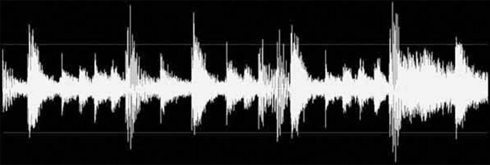

Recife to Ferguson
Long as I Live
Realm of Entities
The Poem is the Research
Edsel’s Song
Aaleah’s Song
Otto’s Song
Fatmata’s Song
Theoretical Conversations
Recife to Ferguson
Download transcript of Recife to Ferguson
Long as I Live
Download transcript of Long as I Live

Waveform of the Amen Break, the iconic six-second drum loop from The Winstons' 1969 track “Amen, Brother.”